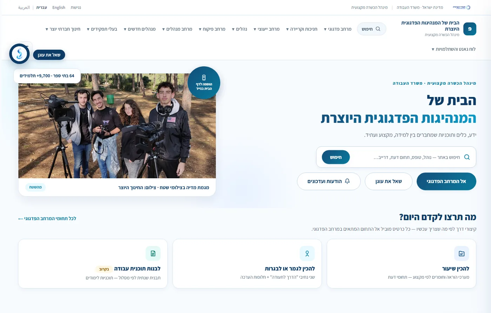
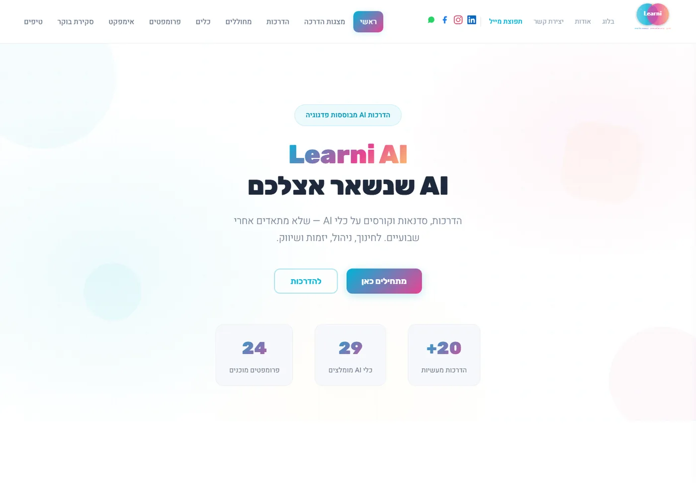
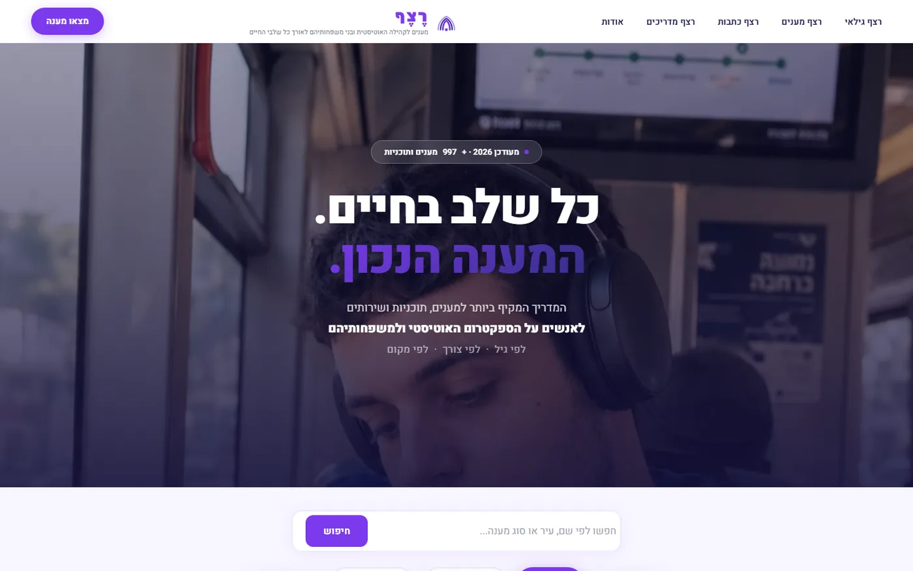
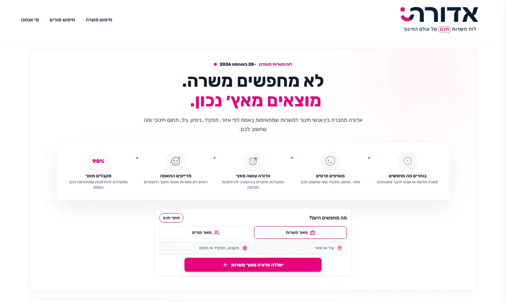
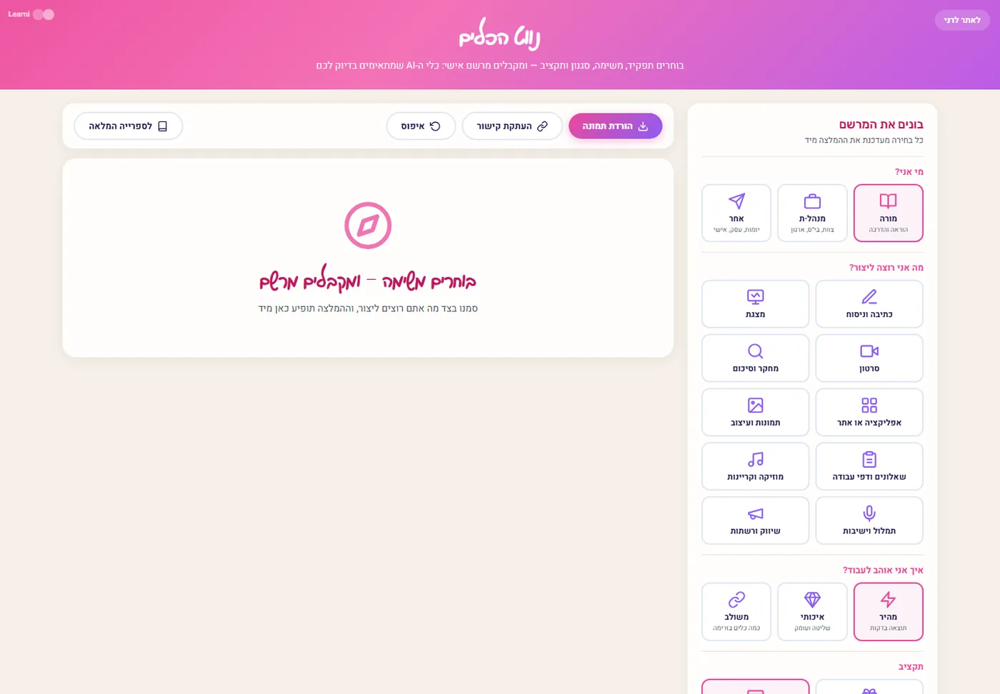

תוכן שאפשר למצוא
חיפוש חופשי על כל האתר, ניווט לפי תפקיד ולפי תחום דעת, וקיצורי דרך לפי מה שרוצים לקדם היום.
רוב האתרים הארגוניים הם חוברת שהודבקה לאינטרנט. אנחנו בונים אתרים שאנשים חוזרים אליהם כדי לעבוד: תוכן שמסודר לפי מה שעושים איתו, חיפוש שבאמת מוצא, כלים אינטראקטיביים בתוך העמוד, ונגישות מהיום הראשון.

pedagogiamh.co.il — הבית של המנהיגות הפדגוגית היוצרת, מינהל הכשרה מקצועית · משרד העבודה
בנינו אתר למשרד ממשלתי, אתר הדרכות ל-AI, מאגר מענים לקהילה האוטיסטית ולוח דרושים לעולם החינוך. שונים לגמרי זה מזה — ואותו עיקרון: התוכן מסודר לפי מה שעושים איתו.
חיפוש חופשי על כל האתר, ניווט לפי תפקיד ולפי תחום דעת, וקיצורי דרך לפי מה שרוצים לקדם היום.
לא רק לקרוא: בניית תוכנית עבודה שנתית, לוח מבחנים, טפסים ומחוללים — עובדים בתוך האתר עצמו.
עברית, ערבית ואנגלית, תפריט נגישות והצהרת נגישות — חלק מהבנייה, לא תוסף שמדביקים בסוף.
"שאל את עוגן" — עוזר שעונה על שאלות מתוך תוכן האתר, כדי שלא צריך לדעת מראש איפה הדבר נמצא.
אתר הידע המקצועי של מינהל הכשרה מקצועית במשרד העבודה, לצוותי הוראה ולמנהלים. התוכן מסודר לפי מה שאיש חינוך צריך לעשות היום — לא לפי מבנה הארגון.

אתר ההדרכות וכלי הבינה המלאכותית — הדרכות, סדנאות וקורסים על כלי AI שלא מתיישנים אחרי שבועיים, לחינוך, לניהול, ליזמות ולשיווק.

המדריך המקיף ביותר למענים, תוכניות ושירותים לאנשים על הספקטרום האוטיסטי ולמשפחותיהם — מסודר לפי גיל, לפי צורך ולפי מקום.

לוח דרושים חכם לעולם החינוך, שמחבר בין אנשי חינוך למשרות לפי אזור, תפקיד, ניסיון ותחום — ולא לפי מי שהעלה מודעה אחרון.


נשמח לשמוע מה הארגון שלכם צריך, ולהראות איך אתר-שהוא-מערכת נראה אצלכם.
בואו נדבר